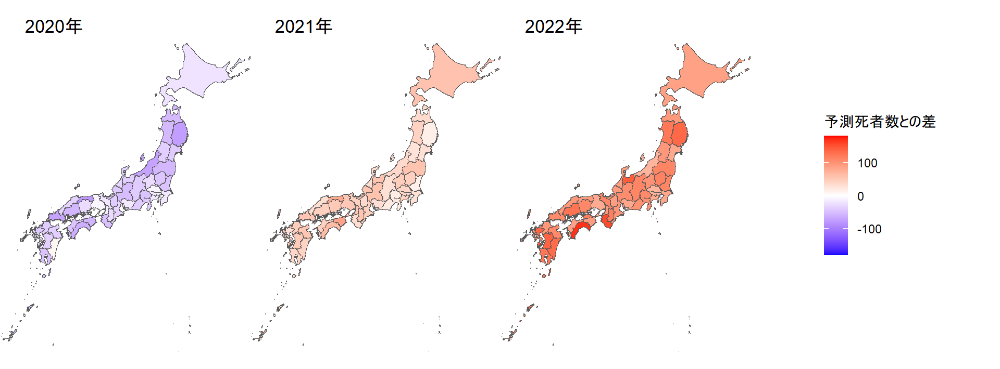
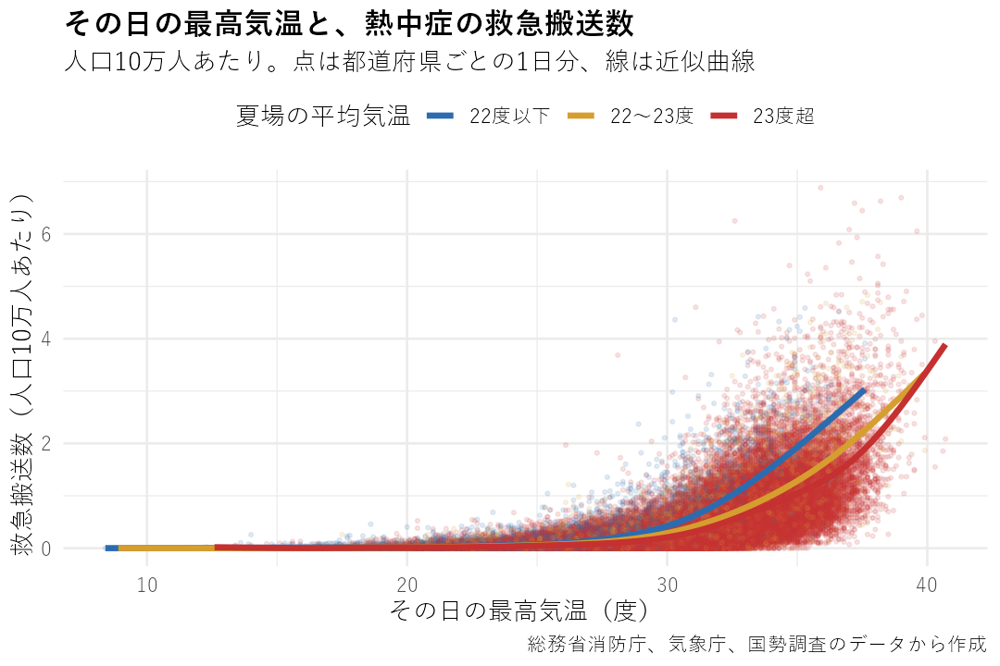

第4部 さらに先へ
もっといろんなことをやるには
データ分析のための道具は、前章までにほぼそろいました。ここでは、その先に広がるRの世界を、私が使ったことのあるものから少しだけ紹介します。
データ分析のために必要なツールは、前章まででほぼすべて紹介しました。ここまでついてきた人なら、データ報道をするうえで、やりたいことのほとんどができるようになっているはずです。
とはいえ、Rでできることはまだたくさん、たくさんたくさんあります。そのすべてを紹介することはできないのですが（私自身も全貌なんて知りませんし）、どんな可能性があるのか、一部だけでもお伝えしようと思います。
API
ウェブサイトにアクセスして、表やらファイルやらを取ってくるというのを第3部でやりました。ただ、実はもっと効率よくデータを集めてくる方法もあります。それを可能にするのがAPI。Application Programming Interfaceというものです。
ざっくり言うと、コンピューターどうしが直接、人間を介さずにコミュニケーションする窓口のようなもの、と考えてください。決まった書き方でURLを組み立てて「こういう条件のデータをください」とお願いすると、相手のサーバーがデータを送ってくれる仕組みです。
送られてくるのは、人間が見るためのウェブページではなく、XMLやJSONといった、プログラムで扱いやすい形のデータです。第3部でやったように、ページの作りを調べて表の場所を探したり、Excelファイルへのリンクをたどったりする必要がありません。ページのデザインが変わってコードが動かなくなる、という心配も（ほぼ）なくなります。
私が使ったことのあるものだと、たとえば国会会議録検索システムのAPIがあります。国会のどの会議で、いつ、誰が、どんな発言をしたか。国立国会図書館はこうしたデータをウェブサイトで公開しています。
たとえば（めちゃめちゃ古いネタですが）昭和28年、衆院予算委員会での質疑の最中に、当時の吉田茂首相が「馬鹿野郎」とつぶやいたのがマイクに拾われました。これがきっかけになって、翌月には衆院解散にまで至りました（いわゆる「バカヤロー解散」です）。このときのやりとりもちゃんと記録に残っていて、確認できます（まあ、「馬鹿野郎」という言葉そのものは伏せ字になってますが）。
というわけで豊富なデータがあるわけですが、APIを使えば「いつ」「誰が」「どの会議で」といったさまざまな条件を指定して、該当する発言をごっそりダウンロードすることもできます。使い方は公式サイトを見てください。実際にどんな感じで使えるかは、私が使ってみたときのコードが参考になるでしょうか。
たとえば、首相が国会で「申し訳ございません」と言ったことが、2018年にどれくらいあったかを調べたいとしましょう。それならこんなURLでお願いすることになります。
ちなみに、返ってきた6件のうち4件は、首相ではなく柳瀬唯夫・元首相秘書官の発言でした。肩書が「元内閣総理大臣秘書官」なので、条件に引っかかったわけです。APIで取ってきたデータも、中身はちゃんと確かめましょう。
それから、政府の各種統計データをダウンロードできるe-StatのAPIもよく使います。これは事前に利用者登録をして、アプリケーションIDを取る必要があって、国会会議録のAPIより少しだけ面倒ですが、それでも非常に便利です。
Rには、このAPIを使うための専用パッケージestatapiもあるので、ぜひ試してみてください。これさえあれば神エクセルと戦う必要がない！ tidyなデータが手間なしでゲットできる！ ありがてぇありがてぇ。すべての統計データが対応しているわけではありませんが、範囲は広がってきています。
地図（GIS）
それから、GIS（Geographic Information System、地理情報システム）を使った分析なんていうのもあります。平たく言うといろんなデータを地図上に表現して、何かおもしろいことが言えないかを探すこと、とお考えください。
Rでこれをやるなら、sfというパッケージが使えます。私はたとえば、新型コロナが大流行していた期間に死者が平常時よりどれだけ増えたのか（あるいは減ったのか）を、都道府県ごとの色分け地図をつくることで調べる、なんてことをやりました。

QGISという、無料のGIS分析ツールも広く使われています。このソフトなら、Excelファイルとかを取り込んでボタンをポチポチすることで、コードを書くことなく直感的な操作で地理分析ができて、これも大変便利です。ただ、Rであればデータの分析から地図化までのすべてを、一連のコードとして表現できるという利点があります。RやPythonでの地理分析を布教しているジャーナリストは「QGISは地理分析のExcelだ」と表現していました。
統計学
それから、統計学です。……と書くと身構えてしまうかもしれませんが、少しだけおつきあいください。
この講座でやってきたのは、データを集めて、整えて、足したり割ったりして、グラフにすることでした。それだけでも、記事になる発見はたくさんあります。
でも、「AとBのあいだには関係がありそうだ」と分かったときに、「それはたまたまじゃないの？」「ほかの理由で説明できるんじゃないの？」と聞かれたら、こういうツールだけでは答えきれません。そこで頼れるのが統計学です。
白状すると、私は統計学を勉強していたころ、こんなものが報道の現場で本当に役に立つとは、ほとんど思っていませんでした。まあ学ぶことは学びますがぁ、回帰分析だの検定だの、学者さんが論文を書くための道具でしょ、と。ところが意外にも、これがものすごく役に立ってしまったのです。
一つは、旧統一教会の選挙への影響を調べたときのことです。2022年の参院選比例区で教団の支援を受けた自民党の井上義行氏は、前回2019年と比べて得票を倍増させて当選しました。これは教団の支援のおかげなのか。だとしたら、票はどれくらい増えたのか。
注目したのは、教団が信者コミュニティーの中心と位置づける「家庭教会」という施設です。施設のある自治体では信者の活動が活発なはずで、井上氏の得票の伸びも大きいのではないか。
ただ、施設のある自治体とない自治体を単純に比べると、施設の有無以外の条件の違いも混じってしまいます。そこで、施設のある259の自治体それぞれに、施設の有無以外の条件がよく似た別の自治体を組み合わせてペアをつくる「マッチング」という手法で比べました。
結果は、施設のある自治体のほうが、得票の伸びが約0.07ポイント大きいというものでした。たったそれだけ？ と思うかもしれません。でも施設のある自治体では約2380万人が投票していたので、票数にすると約1万7千票。しかもこれは「最低限」の数字です。自民党の比例区の候補は11万9千票あれば当選できた選挙ですから、教団の支援がいかに魅力的だったかが、数字で見えてきたわけです。
井上氏と旧統一教会の関係は、より簡易な分析にもとづいた記事を朝日新聞に出したあと、日本選挙学会でのポスター発表を経て、この学会の機関誌「選挙研究」に論文として載りました。データとコードは私の個人サイトで公開しています。
もう一つは、熱中症です。2023年に、熱中症で救急搬送された人の数と気温との関係を、東京大学の疫学の先生に監修してもらいながら調べました。総務省消防庁の都道府県別・日別の搬送データに、気象庁の気温データや、収入、エアコンの保有台数といった都道府県別の統計をくっつけて、どんな要素が搬送数を左右しているのかを、重回帰分析という手法で探りました。
搬送数への影響がいちばん大きかったのは、当たり前ですが、その日の最高気温でした。でも次に効いていたのが夏の平均気温で、しかもむしろ涼しい地域ほど搬送数が多くなる、という結果だったのです。
どうやら涼しい地域の人ほど暑さに慣れておらず、同じ暑さでも熱中症になりやすい、らしい。専門家の知見とも矛盾しなかったので、これを記事の柱に据えました。これも分析の中身を私の個人サイトで公開しています。

ついでに言うと、この「涼しい地域ほど危ない」という話は、私たちが最初から狙っていたものではありません。分析してみたら出てきたものです。統計の道具を持っていると、データが思いもよらないことを教えてくれることがあるわけです。
Rは基本的に統計解析をする研究者がよく使っているプログラミング言語です。回帰分析もマッチングも、そのためのパッケージがそろっています。この講座で身につけた「データを整える力」があれば、その先にある統計の道具にもきっと手が届くはずです。まあ、ある程度の勉強は必要ですけれど。
次が最後の章。AIの時代に、それでも自分でコードを書くことの意味を考えます。